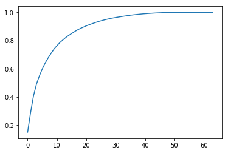
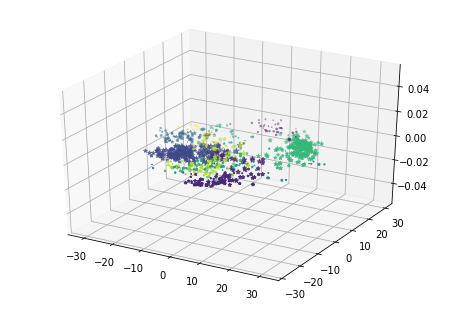
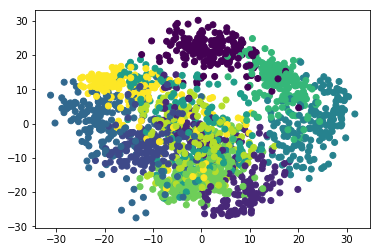
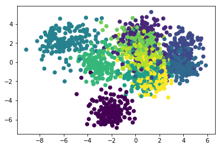
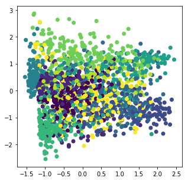

当一个样本数据集的特征数目较多时，通常会造成运行速度缓慢，尤其是在做回归分析的时候，还有可能产生多重共线性，虽然我们可以用岭回归的方法来减小多重共线性，但是仍然存在，那我们何不找个更好的解决办法呢？
于是乎，降维技术应运而生
通过降维，我们可以将高维特征缩减至低维
这样做的好处，一方面在于可以节约计算机运行的时间成本，另一方面，通过降维，可以方便的对数据进行可视化，在前一期的聚类分析中，我们已经了解到，一般地，我们仅能对二维数据进行可视化.
关于降维的数学原理，这里不做讨论，先站在上帝视角学会证明使用这一技术，再去深入研究其构造原理
本次采用sklearn自带的数据集load_digits，这是一个关于手写数字识别的数据集，总共1797条数据，64个特征，对应的目标是0到9这10个数字
1 | #加载数据集 |
1 | digits=load_digits() |
1 | digits.data.shape |
(1797, 64)
1 | digits.target.shape |
(1797,)
1 | X=digits.data |
在降维之前，我们可以先试一下用KNN来训练这个分类器，我们称之为knnclassifier
1 | from sklearn.neighbors import KNeighborsClassifier |
1 | knnclassifier= KNeighborsClassifier() |
1 | knnclassifier |
KNeighborsClassifier(algorithm='auto', leaf_size=30, metric='minkowski',
metric_params=None, n_jobs=1, n_neighbors=5, p=2,
weights='uniform')
1 | #分割据集 |
1 | %%time |
CPU times: user 12 ms, sys: 0 ns, total: 12 ms
Wall time: 10.3 ms
KNeighborsClassifier(algorithm='auto', leaf_size=30, metric='minkowski',
metric_params=None, n_jobs=1, n_neighbors=5, p=2,
weights='uniform')
1 | y_pre=knnclassifier.predict(X_test) |
1 | print knnclassifier.score(X_test,y_test) |
0.984444444444
可以看到，此时准确度是0.98,运行时间是11.2ms
接下来我们将尝试降维操作，把64个特征降到两维
sklearn中的decomposition模块已经为我们封装好了PCA这个降维方法，我们直接调用即可
1 | from sklearn.decomposition import PCA |
1 | #拟合模型 |
现在利用降维后的数据再重新训练一个KNN模型
1 | %%time |
CPU times: user 4 ms, sys: 0 ns, total: 4 ms
Wall time: 7.79 ms
1 | y_pre=knn_reduced.predict(X_test_reduced) |
1 | knn_reduced.score(X_test_reduced,y_test) |
0.5822222222222222
可以看出，虽然运行时间缩减了，但是精确度却大幅度下降
我们所降维度太低了，导致信息量大幅度减少，所以如何才能明确降到多少维合适呢？
这里需要了解一个概念叫做”解释方差比率”（explained_variance_ratio），代表的是每一个维度（特征）能解释总体的百分比，我们要做的就是找到这个比率排名靠前多少的特征，把这些特征作为主成分，其余的解释方差比率较小的特征就剔除掉.
我们可以先查看一下刚才做的两个特征维度的解释方差比率
1 | pca.explained_variance_ratio_ |
array([ 0.15035598, 0.13838039])
总体加起来才0.3不到，丢失了总体70%多的信息，很显然这样子是不行的
我们可以尝试在n_components中传入X_train的特征数，往下看你就明白了：
1 | pca=PCA(n_components=X_train.shape[1]) |
1 | pca#此时的值肯定是６４ |
PCA(copy=True, iterated_power='auto', n_components=64, random_state=None,
svd_solver='auto', tol=0.0, whiten=False)
接下来再fit一下新的pca模型并查看解释方差比率
1 | pca.fit(X_train) |
PCA(copy=True, iterated_power='auto', n_components=64, random_state=None,
svd_solver='auto', tol=0.0, whiten=False)
1 | print pca.explained_variance_ratio_ |
[ 1.50355979e-01 1.38380388e-01 1.19425901e-01 8.24718418e-02
5.91243713e-02 4.96975094e-02 4.23449789e-02 3.56664467e-02
3.23294141e-02 3.03973702e-02 2.34758387e-02 2.23682826e-02
1.82648603e-02 1.77678251e-02 1.45825518e-02 1.37044626e-02
1.30959900e-02 1.25622026e-02 1.02151829e-02 9.12424514e-03
8.91759754e-03 7.95889667e-03 7.55729053e-03 7.36310540e-03
6.86397508e-03 5.97732760e-03 5.70365442e-03 5.11943388e-03
4.81884444e-03 4.07489205e-03 3.74656189e-03 3.57400245e-03
3.31144332e-03 3.24522870e-03 3.04902907e-03 2.87135997e-03
2.57153779e-03 2.21866132e-03 2.15818927e-03 2.04639853e-03
1.85231174e-03 1.53306454e-03 1.48233877e-03 1.36725744e-03
1.14492332e-03 1.02513374e-03 9.51122042e-04 7.75946877e-04
5.59969368e-04 3.59004930e-04 2.22920251e-04 7.96771455e-05
4.21882118e-05 3.98867466e-05 3.23086994e-05 1.60861117e-05
7.16567372e-06 3.66786169e-06 8.50034737e-07 7.03829770e-07
4.01254157e-07 6.85795787e-34 6.85795787e-34 6.34067110e-34]
以上便是按照从大到小顺序排列的每一个特征维度一次可以解释的方差比率
我们要做的是丢掉那些解释方差比率较小的，也就是后面的那些，保留前面的，那证明判断保留多少个合适呢？下面提供一种方法
1 | import numpy as np |

横轴代表的是特征数目，纵轴代表的是所有被选中的主成分特征变量所能解释的方差比率之和
通过上图，比如我们要求所选取的主成分能解释总体80%的方差，那么对应横轴大约是20，也就是说我们的n_components应该传入20
这样，我们就可以通过观察上图来确定n_components了
其实，在sklearn中，这个功能已经封装好了，我们不必画图观察，而是传入我们所想要的主成分变量能解释的方差比率之和这个参数就可以了
调用方法很简单，直接在初始化模型的时候传入这个参数就行了
1 | pca=PCA(0.95)#要保留原始样本95%的解释方差 |
1 | pca.fit(X_train)#重新训练模型 |
PCA(copy=True, iterated_power='auto', n_components=0.95, random_state=None,
svd_solver='auto', tol=0.0, whiten=False)
我们可以看一下自动确定的最佳的保留的特征数，也就是主成分的个数
1 | print pca.n_components_ |
28
28,说明保留了28个主成分，这28个特征变量加起来就能解释总体95%的方差
那既然已经构建好了降维模型，那就拿来操练一下吧
先降维处理数据
1 | pca.fit(X_train) |
1 | X_train_reduction.shape |
(1347, 28)
1 | X_test_reduction.shape |
(450, 28)
再次重新训练KNN模型
1 | %%time |
CPU times: user 4 ms, sys: 0 ns, total: 4 ms
Wall time: 5.25 ms
1 | knn_reduced.score(X_test_reduction,y_test) |
0.97999999999999998
从中可以看出，精确度将近0.98，而运行时间也比刚开始的节省了不少｜
说完了PCA的使用，最后来看看如何对降维结果进行可视化，当然，这里我们只能对二维或者三维数据进行
我们把特征降到３维（不考虑解释方差比率，这里只是为了讲解可视化的方法）
以下用的是整个样本，没有划分数据集
1 | from sklearn.decomposition import PCA |
1 | pca.fit(X) |
PCA(copy=True, iterated_power='auto', n_components=3, random_state=None,
svd_solver='auto', tol=0.0, whiten=False)
1 | X_vis=pca.transform(X) |
1 | X_vis.shape |
(1797, 3)
1 | #导入三维数据可视化工具 |
1 | #数据可视化 |
/home/fantasy/anaconda2/lib/python2.7/site-packages/matplotlib/collections.py:865: RuntimeWarning: invalid value encountered in sqrt
scale = np.sqrt(self._sizes) * dpi / 72.0 * self._factor

我们再继续降到２维
1 | from sklearn.decomposition import PCA |
[ 0.14890594 0.13618771]
[ 178.90731578 163.62664073]

是不是螺旋爆炸式的混乱？
由于PCA没有利用类别信息，我们可以看到降维后，样本特征和类别的信息关联几乎完全丢失。
于是LDA(线性判别式分析)应运而生！
与PCA一样，LDA是一种线性降维算法。不同于PCA只会选择数据变化最大的方向，由于LDA是有监督的（分类标签），所以LDA会主要以类别为思考因素，使得投影后的样本尽可能可分。它通过在k维空间选择一个投影超平面，使得不同类别在该超平面上的投影之间的距离尽可能近，同时不同类别的投影之间的距离尽可能远。从而试图明确地模拟数据类之间的差异。
一般来说，如果我们的数据是有类别标签的，那么优先选择LDA去尝试降维；当然也可以使用PCA做很小幅度的降维去消去噪声，然后再使用LDA降维。如果没有类别标签，那么肯定PCA是最先考虑的一个选择了。
而我们使用的数据集是有分类标签的（０，１，２，．．．，９），所以接下来我们将尝试LDA降维，最后再来可视化一下降维结果
1 | from sklearn.discriminant_analysis import LinearDiscriminantAnalysis |
/home/fantasy/anaconda2/lib/python2.7/site-packages/sklearn/discriminant_analysis.py:387: UserWarning: Variables are collinear.
warnings.warn("Variables are collinear.")

LDA降维后可以把数据归为簇，利用了样本类别标签信息
总结来说，如果样本没有标签，则使用PCA,若有标签，则最好使用LDA
主成分分析(PCA)和LDA都是直接选择对评价结果贡献度较高的几个维度，或者直接去掉对评价结果贡献度较低的几个维度；
而下面要讲的FA(因子分析)，则是以已知的所有维度为基础，创造数量更少的全新的一组维度来进行评价。先对原始的一组维度进行相关性分析，合并相关性高的，保留相关性低的。或者说，找出一组能够『代表』原维度组的新维度，同时能保留新维度组没有涵盖的特色部分。
通俗地说，就是造变量，用造的变量去替换原有的变量，并且造的变量的个数小于原有变量的个数
因子分析（Factor Analysis）是指研究从变量群中提取共性因子的统计技术，这里的共性因子指的是不同变量之间内在的隐藏因子。例如，一个学生的英语、数据、语文成绩都很好，那么潜在的共性因子可能是智力水平高。因此，因子分析的过程其实是寻找共性因子和个性因子并得到最优解释的过程。（摘自网络）
来看一下在sklearn中的调用方法：
1 | from sklearn.decomposition import FactorAnalysis |
1 | fa.fit(X) |
FactorAnalysis(copy=True, iterated_power=3, max_iter=1000, n_components=2,
noise_variance_init=None, random_state=0, svd_method='randomized',
tol=0.01)
1 | data_two_dim=fa.transform(X) |
1 | data_two_dim.shape#已经降到二维了 |
(1797, 2)
1 | data_two_dim#并且是新的两个因子（这两个因子是全部64个变量的线性组合） |
array([[-0.06629194, 0.30635624],
[-0.99445736, 0.14948677],
[-1.07480679, -0.40291119],
...,
[-0.7385388 , 0.0977223 ],
[-0.40362928, -0.25358677],
[ 0.67042921, -0.89378447]])
降维结束，现在你可以重新训练之前的KNN模型，试一下效果了
最后的最后，我们来可视化一下降维后的数据
1 | f = plt.figure(figsize=(5, 5)) |

Over!
参考：
https://blog.csdn.net/u013719780/article/details/51767314
https://www.cnblogs.com/pinard/p/6249328.html
https://blog.csdn.net/sm9sun/article/details/78791985
bobo老师机器学习视频教程